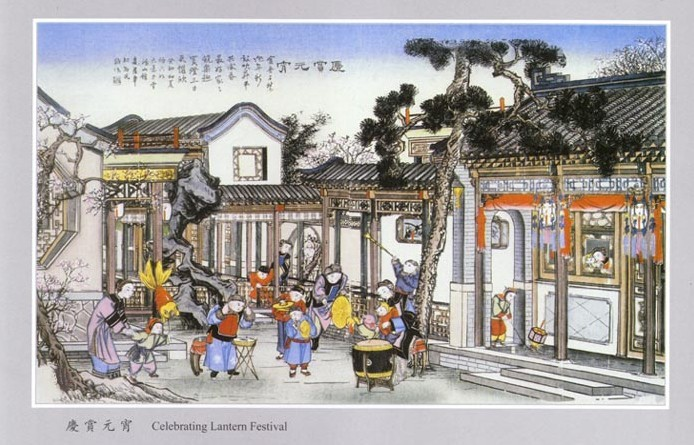

- 中国民间年画简介
- 各地对年画的称谓南辕北辙，北京叫“画片”、“卫画”，苏州叫“画张”，浙江叫“花纸”，福建叫“神符”，四川叫“斗方”，不一而足。今天，各地对年画逐渐约定俗成地简称为“年画”。 年画是中华民族祈福迎新的一种民间工艺品，是一种承载着人民大众对未来美好憧憬的民间艺术表现形式。
年画画面线条单纯、色彩鲜明、气氛热烈愉快，如春牛图、岁朝图、嘉穗图、戏婴图、合家欢、看花灯，胖娃娃等，并有以神仙、历史故事、戏剧人物作题材的。
建国后，年画在传统的基绌上推陈出新，丰富多彩，更为人民群众所喜爱。年画艺术，是中国民间艺术的先河，同时也是中国社会的历史、生活、信仰和风俗的反映。每逢过农历新年时买两张年画贴在大门上，差不多每家都是如此，由大门到厅房，都贴满了各种花花绿绿、象征吉祥富贵的年画，新春之所以充满欢乐热闹的气氛，年画在这里面起着一定的作用。大抵比较富厚人家，在厅房总喜欢悬挂老寿星、紫微星、福、禄、寿等。至与梅兰竹菊等花鸟图，自然亦在欢迎之列。